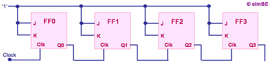
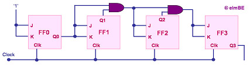

Digital
Counters
A
digital counter,
or simply
counter,
is a semiconductor device that is used for counting the number of times
that a digital event has occurred. The counter's output is indexed
by one LSB every time the counter is clocked.
A simple
implementation of a 4-bit counter is shown in Figure 1, which consists of
4 stages of cascaded J-K flip-flops. This is a binary counter, since the
output is in binary system format, i.e., only two digits are used to
represent the count, i.e., '1' and '0'. With only 4 bits, it can
only count up to '1111', or decimal number 15.
As one can see
from Figure 1, the
J and K inputs of all the flip-flops are tied to '1', so that they will
toggle between states every time they are clocked. Also, the
output of each flip-flop in the counter is used to clock the next
flip-flop. As a result, the succeeding flip-flop toggles between '1'
and '0' at only half the frequency as the flip-flop before it.

Figure 1.
A Simple Ripple Counter Consisting of J-K Flip-flops
Thus, in Figure
1's 4-bit example, the last flip-flop will only toggle after the first
flip-flop has already toggled 8 times. This type of binary counter is
known as a 'serial', 'ripple', or 'asynchronous' counter. The name
'asynchronous' comes from the fact that this counter's flip-flops are not
being clocked at the same time.
A 4-bit
counter, which has 16 unique states that it can count through, is also
called a modulo-16 counter, or mod-16 counter. By definition, a
modulo-k or base-k counter is one that returns to its initial state after
k cycles of the input waveform. A counter that has N flip-flops is
a modulo 2N
counter.
An asynchronous
counter has a serious drawback - its speed is limited by the cumulative
propagation times of the cascaded flip-flops. A counter that has N
flip-flops, each of which has a propagation time t, must therefore wait
for a duration equal to N x t before it can undergo another transition
clocking.
A better
counter, therefore, is one whose flip-flops are clocked at the same time.
Such a counter is known as a synchronous counter. A simple 4-bit
synchronous counter is shown in Figure 2.
Not all
counters with N flip-flops are designed to go through all its 2N
possible states of count. In fact, digital counters can be used to
output decimal numbers by using
logic gates to force them to reset when
the output becomes equal to decimal 10. Counters used in this manner are
said to be in binary-coded decimal (BCD).

Figure 2.
A Simple Synchronous Counter Consisting of J-K Flip-flops and AND gates
See Also:
What is a
Semiconductor?;
Flip-flops; Shift
Registers
HOME
Copyright
©
2005
www.EESemi.com.
All Rights Reserved.